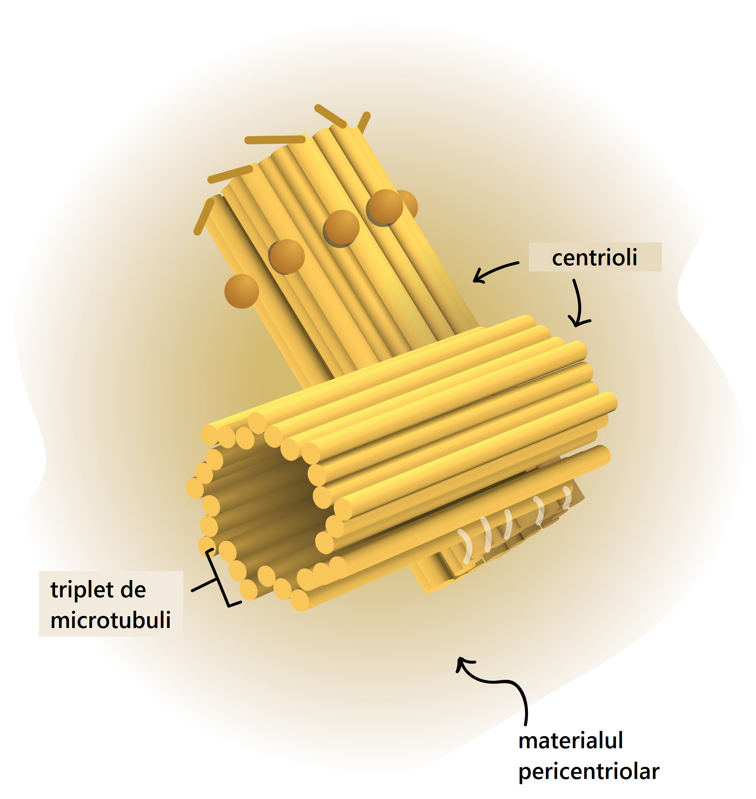

Reticul Endoplasmatic
Reticulul endoplasmic (RE) este un sistem de tubuli si cisterne aplatizate care face legatura intre nucleu si membrana celulei. Este de doua tipuri: rugos (RER) sau granular si neted (REN).
Reticulul endoplasmatic dur Reticulul endoplasmic brut produce membrane și proteine secretorii. Ribozomii atașați la ER dur sintetizează proteine prin procesul de traducere . În anumite leucocite (celule albe din sânge), ER dur produce anticorpi . În celulele pancreatice , ER dur produce insulină. Erul dur și neted este, de obicei, interconectat, iar proteinele și membranele făcute de ER se deplasează în ER netedă pentru a fi transferate în alte locații. Unele proteine sunt trimise la aparatul Golgi prin vezicule speciale de transport. După ce proteinele au fost modificate în Golgi, ele sunt transportate în destinațiile lor corespunzătoare din interiorul celulei sau exportate din celulă prin exocitoză .
Reticulul endoplasmatic neted ER ER are o gamă largă de funcții, incluzând sinteza carbohidraților și a lipidelor . Lipidele precum fosfolipidele și colesterolul sunt necesare pentru construirea membranelor celulare . Smooth ER, de asemenea, servește ca o zonă de tranziție pentru vezicule care transportă produse ER în diferite destinații. În celulele hepatice, ER netezită produce enzime care ajută la detoxificarea anumitor compuși. În mușchi , ER neplăcută ajută la contracția celulelor musculare, iar în celulele creierului sintetizează hormonii masculi și feminini .
aparatul golgi
Aparatul Golgi (dictiozomii) este un ansamblu de cisterne aplatizate, suprapuse, localizat de obicei in apropierea nucleului. Rolul sau este de a prelua produsii de sinteza din RER, produsi care vor fi supusi unor procese de maturare (secventiere, glicozilare) si excretie extracelulara prin exocitoza.
centrozomul
Centrozomul este situat in apropierea nucleului si se manifesta in timpul diviziunii celulare. Este format din doi centrioli cilindrici, orientati perpendicular unul pe celalalt si inconjurati de o zona de citoplasma vascoasa numita centrosfera. Centrozomul are rol in diviziunea celulara. Lipseste in neuroni.

Ribozomii
Ribozomii sunt organite bogate in ribonucleoproteine, de forma unor granule ovale sau rotunde (150-250 Å). Exista ribozomi liberi in matricea citoplasmatica si asociati reticulului endoplasmic neted, care formeaza ergastoplasma (RER). Ribozomii reprezinta sediul sintezei proteice.
Sinteza proteică (de asemenea întâlnită ca biosinteză proteică) este procesul biochimic în urma căruia celulele generează proteine, fiind reglat prin mecanisme de degradare proteină (proteoliză) și export. Translația și implicit asamblarea și legarea aminoacizilor de către ribozomi, este o parte esențială a acestei căi metabolice biosintetice. Reglarea metabolică a procesului de sinteză proteică are loc pe mai multe etape.

Mitocondriile
Mitocondriile sunt „centralele energetice” ale celulei. Ele convertesc energia stocata in macromoleculele bogate in energie (lipide si glucide) in ATP folosit pentru toate activitatile celulei. Au o forma ovoida, care se poate schimba in cursul deplasarii prin celula. Prezinta o membrana externa si o membrana interna. Aceasta din urma este pliata formand numeroase criste mitocondriale. Membrana interna este specializata in conversii energetice.
Mitocondriile au material genetic propriu - ADN-ul mitocondrial - care conține informația genetică necesară pentru sinteza enzimelor respiratorii. Este un organit similar cloroplastului. Totalitatea mitocondriilor dintr-o celulă formează condriozomul.
Lizozomii
Lizozomii sunt corpusculi sferici care contin enzime hidrolitice, capabile practic sa digere orice tip de macromolecula din celula. Membrana care inconjoara lizozomii izoleaza aceste enzime de restul celulei. Rolul lor este de a digera bacteriile periculoase si corpurile straine, particulele fagocitate si organitele imbatranite.